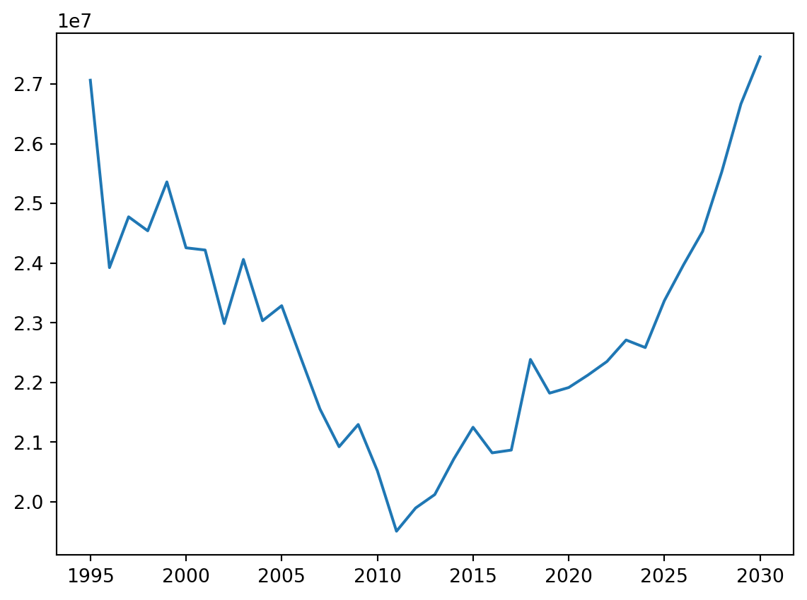
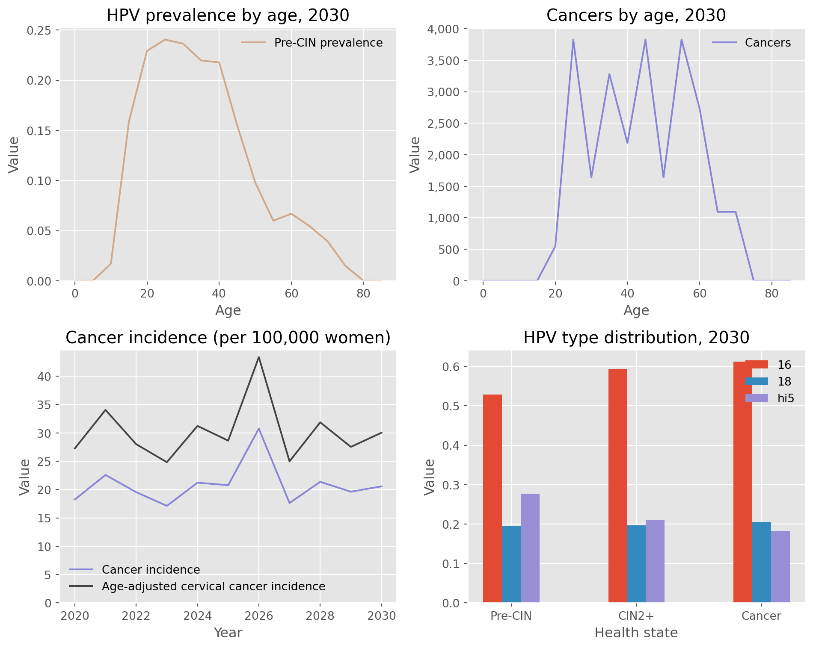
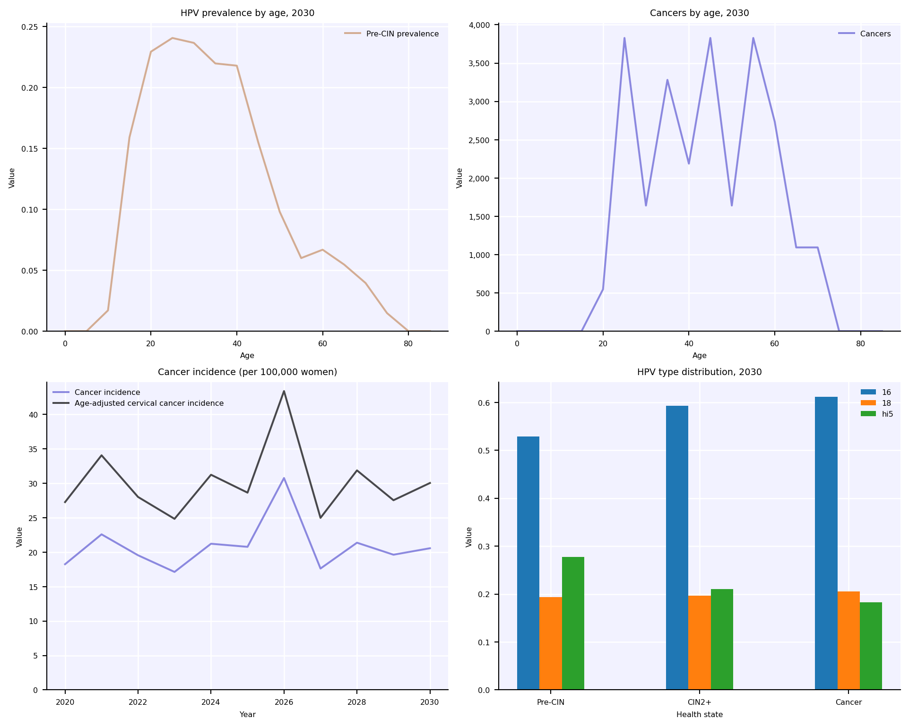
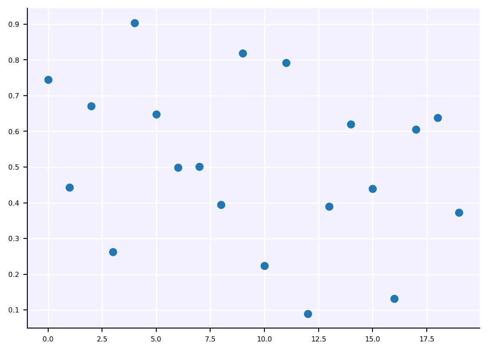
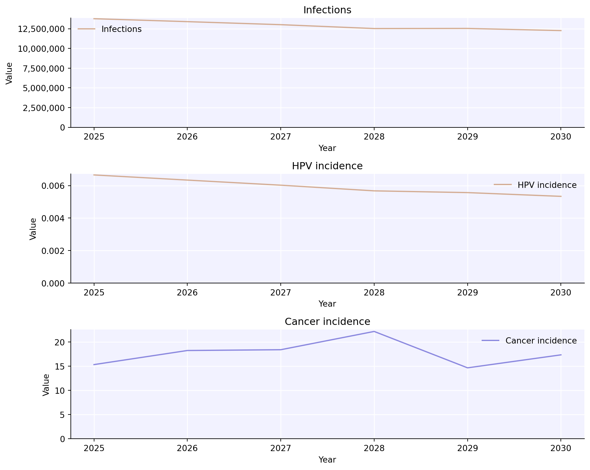

This tutorial provides a brief overview of options for plotting results, printing objects, and saving results.
Click here to open an interactive version of this notebook.
Global plotting configuration
HPVsim allows the user to set various options that apply to all plots. You can change the font size, default DPI, whether plots should be shown by default, etc. (for the full list, see hpv.options.help()). For example, we might want higher resolution, to turn off automatic figure display, close figures after they’re rendered, and to turn off the messages that print when a simulation is running. We can do this using built-in defaults for Jupyter notebooks (and then run a sim) with:
import hpvsim as hpvhpv.options(jupyter=True, verbose=0) # Standard options for Jupyter notebooksim = hpv.Sim()sim.run()
Simulation summary:
824,814,324 total HPV infections
512,386 total cancers
275,606 total cancer deaths
14.47 mean HPV prevalence (%)
14.72 mean cancer incidence (per 100k)
33.14 mean age of infection (years)
46.65 mean age of cancer (years)
49.93 mean age of cancer death (years)
Finally, to show the full object, including all methods and attributes, use disp():
While a sim can be plotted using default settings simply by sim.plot(), this is just a small fraction of what’s available. First, note that results can be plotted directly using e.g. Matplotlib. You can see what quantities are available for plotting with sim.results.keys() (remember, it’s just a dict). A simple example of plotting using Matplotlib is:
import pylab as plt # Shortcut for import matplotlib.pyplot as pltplt.plot(sim.results['year'], sim.results['infections']);

However, as you can see, this isn’t ideal since the default formatting is…not great. (Also, note that each result is a Result object, not a simple Numpy array; like a pandas dataframe, you can get the array of values directly via e.g. sim.results.infections.values.)
An alternative, you can also select one or more quantities to plot with the first (to_plot) argument, e.g.
While we can save this figure using Matplotlib’s built-in savefig(), if we use HPVsim’s hpv.savefig() we get a couple of advantages:
hpv.savefig('my-fig.png')
'my-fig.png'
<Figure size 672x480 with 0 Axes>
First, it saves the figure at higher resolution by default (which you can adjust with the dpi argument). But second, it stores information about the code that was used to generate the figure as metadata, which can be loaded later. Made an awesome plot but can’t remember even what script you ran to generate it, much less what version of the code? You’ll never have to worry about that again.
hpv.get_png_metadata('my-fig.png')
HPVsim version: 2.2.6
HPVsim branch: quarto
HPVsim hash: 9e21854
HPVsim date: 2026-04-18 02:28:39 UTC
HPVsim caller branch: quarto
HPVsim caller hash: 9e21854
HPVsim caller date: 2026-04-18 02:28:39 UTC
HPVsim caller filename: /home/cliffk/idm/hpvsim/hpvsim/misc.py
HPVsim current time: 2026-Apr-17 22:32:35
HPVsim calling file: /tmp/ipykernel_838472/1797766398.py
Customizing plots
We saw above how to set default plot configuration options for Jupyter. HPVsim provides a lot of flexibility in customizing the appearance of plots as well. There are three different levels at which you can set plotting options: global, just for HPVsim, or just for the current plot. To give an example with changing the figure DPI: - Change the setting globally (for both HPVsim and Matplotlib): sc.options(dpi=150) or pl.rc('figure', dpi=150) (where sc is import sciris as sc) - Change for HPVsim plots, but not for Matplotlib plots: hpv.options(dpi=150) - Change for the current HPVsim plot, but not other HPVsim plots: sim.plot(dpi=150)
The easiest way to change the style of HPVsim plots is with the style argument. For example, to plot using a built-in Matplotlib style would simply be:
sim.plot(style='ggplot');

In addition to the default style ('hpvsim'), there is also a “simple” style. You can combine built-in styles with additional overrides, including any valid Matplotlib commands:
Although most style handling is done automatically, you can also use it yourself in a with block, e.g.:
import numpy as npwith hpv.options.with_style(fontsize=6): sim.plot() # This will have 6 point font plt.figure(); plt.plot(np.random.rand(20), 'o') # So will this


Saving options
Saving sims is also pretty simple. The simplest way to save is simply
Technically, this saves as a gzipped pickle file (via sc.saveobj() using the Sciris library). By default this does not save the people in the sim since they are very large (and since, if the random seed is saved, they can usually be regenerated). If you want to save the people as well, you can use the keep_people argument. For example, here’s what it would look like to create a sim, run it halfway, save it, load it, change the overall transmissibility (beta), and finish running it:
sim_orig = hpv.Sim(start=2000, end=2030, label='Load & save example')sim_orig.run(until='2015')sim_orig.save('my-half-finished-sim.sim') # Note: HPVsim always saves the people if the sim isn't finished running yetsim = hpv.load('my-half-finished-sim.sim')sim['beta'] *=0.3sim.run()sim.plot(['infections', 'hpv_incidence', 'cancer_incidence']);
Loading location-specific demographic data for "nigeria"

Aside from saving the entire simulation, there are other export options available. You can export the results and parameters to a JSON file (using sim.to_json()), but probably the most useful is to export the results to an Excel workbook, where they can easily be stored and processed with e.g. Pandas:
import pandas as pdsim.to_excel('my-sim.xlsx')df = pd.read_excel('my-sim.xlsx')print(df)